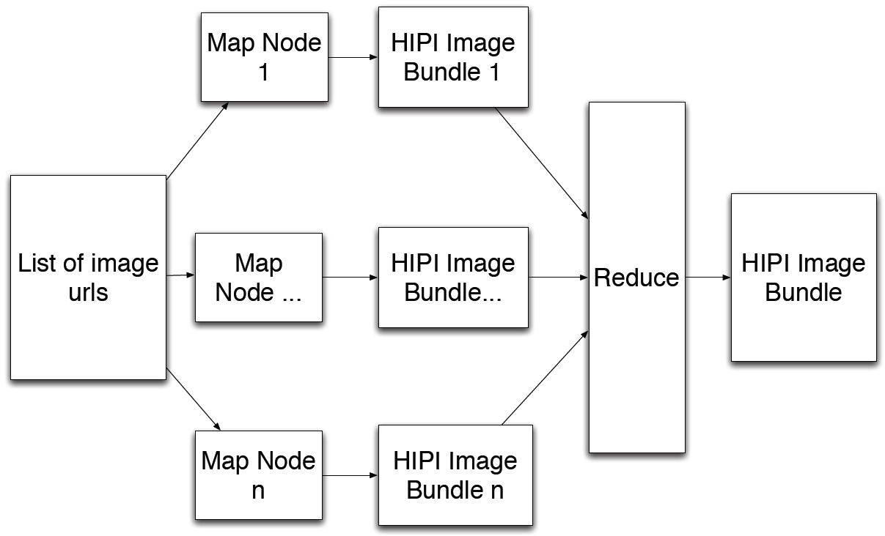
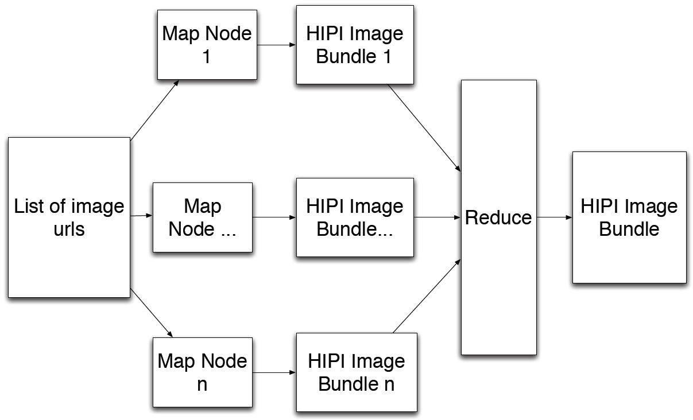

tools/hibDownload
hibDownload is a MapReduce/HIPI program that creates a HipiImageBundle (HIB) from a set of images on the Internet. For example, you might use hibDownload to download images from popular photo sharing websites like Flickr, Google Images, Bing, or Instagram. hibDownload has also been designed to work seamlessly with the Yahoo/Flickr CC 100M research dataset.
Next, run hibDownload using the provied script in the tools directory:
As a second example, we show how hibDownload can be used with the Yahoo/Flickr CC 100M dataset. The HIPI distribution includes a very small portion of this dataset for testing and exploration. Copy these source files to the HDFS in a separate directory:
Each of the two source files in this example contain 100 image URLs. After hibDownload finishes, we can inspect the HIB that was produced:
Finally, we use hibInfo once more to inspect one of the images in this set:
To begin, let's study tools/hibDownload/src/main/java/org/hipi/tools/downloader/DownloaderInputFormat.java. This class extends the FileInputFormat Hadoop class and is responsible for parsing the input text file and initiating the map tasks that download the images. In particular, the getSplits() method in this class causes n map tasks to each download (k / n) images into separate HipiImageBundle (HIBs). After these map tasks have completed, a single reduce task then merges these HIBs into one single HIB located at the output path specified by the user. This diagram illustrates the process: 
Important Note: This discussion is more related to how Hadoop works than HIPI, but you may still find it informative. If you're not familiar with the basics of how Hadoop works you may also want to first read some documentation.
In order to cause Hadoop to spawn n map tasks that each run on different nodes in the cluster (bear in mind this is only possible if m is greater than or equal to n), the getSplits() method in DownloaderInputFormat creates n temporary files on the HDFS. Due to Hadoop's effort to uniformly distribute files over the distributed file system, each new file has a high probability of being located on a unique machine. Based on these observations, our process of spawning n map tasks on different machines is as follows:
1. Create up to 2n temporary files on the HDFS with the goal of identifying n unique compute nodes:
In the case of hibDownload, the DownloaderRecordReader emits a block of lines from the input split it receives to the map task. The map task is then responsible for downloading this block of URLs and storing them in a single HIB. (These HIBs are eventually appended into a single HIB in the reduce phase.) As mentioned above, the DownloaderInputFormat class uses the Hadoop FileSplit object to communicate to the DownloaderRecordReader the portion of the input file it is responsible for processing. The initialize() method in DownloaderRecordReader sets up the variables and objects that will be used to create and deliver blocks of input lines to the Mapper:
Finally, DownloadRecordReader also implements the functions that are called by the map tasks to obtain their input key/value pairs. In this case, the key is the line number that begins each block and the value is a Text object that contains the entire block of lines delimited by the newline character:
First, a temporary HIB is created to hold the set of images downloaded by the map task:
After all of the URLs have been processed, the mapper's output HIB is finalized and a record indicating its location on the filesystem is sent to the reduce task:
Compiling
Compile hibDownload by executing the following Gradle command in the HIPI tools directory (see our general notes on setting up HIPI on your system):
$> cd tools
$> gradle hibDownload:jar
Usage
Run hibDownload by executing the hibDownload.sh script located in the tools directory. Running it without any arguments shows its usage:
$> ./hibDownload.sh
usage: hibDownload.jar <directory containing source files> <output HIB> [-f] [--yfcc100m] [--num-nodes #count]
-f,--force force overwrite if output HIB already exists
-n,--num-nodes <arg> number of download nodes (default=1) (ignored if --yfcc100m is specified)
-y,--yfcc100m assume input files are in Yahoo/Flickr CC 100M format
hibDownload takes two required arguments: a path to a directory on the HDFS that contains files with lists of image URLs and a path to a destination HIB, also on the HDFS. The program attempts to download the entire set of image URLs (potentially using multiple download nodes working in parallel) and stores these downloaded images in the output HIB. hibDownload also accepts several optional arguments that allow specifying the number of download nodes and using input files from the Yahoo/Flickr CC 100M dataset.
Example
This section will walk you through a few examples that illustrate how hibDownload works. First, we will use hibDownload to create a HIB from the small set of sample images that are available at http://hipi.cs.virginia.edu. The first step is to copy a text file that lists these image URLs to a directory on the HDFS. This can be done by issuing the following commands from within the tools directory:$> cd tools $> hadoop fs -mkdir download $> hadoop fs -copyFromLocal ../testdata/downloader-images.txt download/images.txtTo make sure things worked as expected, we can inspect the contents of the text file now on the HDFS:
$> hadoop fs -cat download/images.txt http://hipi.cs.virginia.edu/examples/testimages/01.jpg http://hipi.cs.virginia.edu/examples/testimages/02.jpg http://hipi.cs.virginia.edu/examples/testimages/03.jpg http://hipi.cs.virginia.edu/examples/testimages/04.jpg http://hipi.cs.virginia.edu/examples/testimages/05.jpg http://hipi.cs.virginia.edu/examples/testimages/06.jpg http://hipi.cs.virginia.edu/examples/testimages/07.jpg http://hipi.cs.virginia.edu/examples/testimages/08.jpg http://hipi.cs.virginia.edu/examples/testimages/09.jpg http://hipi.cs.virginia.edu/examples/testimages/10.jpg http://hipi.cs.virginia.edu/examples/testimages/11.jpg http://hipi.cs.virginia.edu/examples/testimages/12.pngNote that the text file download/images.txt contains 12 URLs to images located on the HIPI project website (these images are all in the public domain).
Next, run hibDownload using the provied script in the tools directory:
$> ./hibDownload.sh download/images.txt download.hib --num-nodes 10 ... Downloading: http://hipi.cs.virginia.edu/examples/testimages/01.jpg > Took 0.467 seconds Downloading: http://hipi.cs.virginia.edu/examples/testimages/02.jpg > Took 0.443 seconds ...In this case, we requested 10 download nodes. If our Hadoop cluster contains at least 10 nodes then this would cause the download operation to be distributed over this many nodes. (Note that this feature is disabled when using the '--yfcc100m' flag as the authors of that dataset explicitly requested no distributed downloads.) After hibDownload finishes, we can verify the output HIB using the hibInfo tool:
$> ./hibInfo.sh download.hib --show-meta
Input HIB: download.hib
Display meta data: true
Display EXIF data: false
IMAGE INDEX: 0
3456 x 2304
format: 1
meta: {source=http://hipi.cs.virginia.edu/examples/testimages/01.jpg}
IMAGE INDEX: 1
3072 x 2304
format: 1
meta: {source=http://hipi.cs.virginia.edu/examples/testimages/02.jpg}
IMAGE INDEX: 2
2592 x 1944
format: 1
meta: {source=http://hipi.cs.virginia.edu/examples/testimages/03.jpg}
IMAGE INDEX: 3
3072 x 2304
format: 1
meta: {source=http://hipi.cs.virginia.edu/examples/testimages/04.jpg}
IMAGE INDEX: 4
3456 x 2304
format: 1
meta: {source=http://hipi.cs.virginia.edu/examples/testimages/05.jpg}
IMAGE INDEX: 5
4320 x 3240
format: 1
meta: {source=http://hipi.cs.virginia.edu/examples/testimages/06.jpg}
IMAGE INDEX: 6
3456 x 2304
format: 1
meta: {source=http://hipi.cs.virginia.edu/examples/testimages/07.jpg}
IMAGE INDEX: 7
3456 x 2304
format: 1
meta: {source=http://hipi.cs.virginia.edu/examples/testimages/08.jpg}
IMAGE INDEX: 8
1600 x 1065
format: 1
meta: {source=http://hipi.cs.virginia.edu/examples/testimages/09.jpg}
IMAGE INDEX: 9
1600 x 1065
format: 1
meta: {source=http://hipi.cs.virginia.edu/examples/testimages/10.jpg}
IMAGE INDEX: 10
2048 x 1318
format: 1
meta: {source=http://hipi.cs.virginia.edu/examples/testimages/11.jpg}
IMAGE INDEX: 11
1024 x 767
format: 2
meta: {source=http://hipi.cs.virginia.edu/examples/testimages/12.png}
Found [12] images.
Note that the source URL is preserved in the image meta data.As a second example, we show how hibDownload can be used with the Yahoo/Flickr CC 100M dataset. The HIPI distribution includes a very small portion of this dataset for testing and exploration. Copy these source files to the HDFS in a separate directory:
$> hadoop fs -mkdir download-yf
$> hadoop fs -copyFromLocal ../testdata/yfcc100m_dataset-100-temp-0.bz2 download-yf/yfcc100m_dataset-100-temp-0.bz2
$> hadoop fs -copyFromLocal ../testdata/yfcc100m_dataset-100-temp-1.bz2 download-yf/yfcc100m_dataset-100-temp-1.bz2
$> ./hibDownload.sh download-yf download-yf.hib --yfcc100m
$> hadoop fs -copyFromLocal ../testdata/yfcc100m_dataset-100-temp-0.bz2 downloader-yf/yfcc100m_dataset-100-temp-0.bz2
$> hadoop fs -copyFromLocal ../testdata/yfcc100m_dataset-100-temp-1.bz2 downloader-yf/yfcc100m_dataset-100-temp-1.bz2
Note that hibDownload works with both plain text input files and compressed text files. The YFCC100M dataset is distributed in the BZ2 format.Each of the two source files in this example contain 100 image URLs. After hibDownload finishes, we can inspect the HIB that was produced:
$> ./hibInfo.sh download-yf.hib --show-meta
Input HIB: download-yf.hib
Display meta data: true
Display EXIF data: false
IMAGE INDEX: 0
500 x 332
format: 1
meta: {col_010=, col_011=, col_012=, col_013=http://www.flickr.com/photos/35271748@N00/9135839752/, col_014=http://farm4.staticflickr.com/3812/9135839752_53fb47cee7.jpg, col_015=Attribution-NonCommercial-NoDerivs License, col_016=http://creativecommons.org/licenses/by-nc-nd/2.0/, col_017=3812, col_018=4, col_019=53fb47cee7, source=http://farm4.staticflickr.com/3812/9135839752_53fb47cee7.jpg, col_021=jpg, col_000=9135839752, col_022=0, col_001=35271748@N00, col_002=dvdbramhall, col_003=2013-06-17 13:29:21.0, col_004=1372169037, col_005=PENTAX+K-r, col_006=Venice+2013, col_007=Cab+of+the+vaporetto+-+Grand+Canal., col_008=italia,italy,veneto,venezia,venice,venise, col_009=, col_020=c349232a59}
IMAGE INDEX: 1
500 x 344
format: 1
meta: {col_010=, col_011=, col_012=, col_013=http://www.flickr.com/photos/71606984@N00/8736554963/, col_014=http://farm8.staticflickr.com/7288/8736554963_5691f7cfcd.jpg, col_015=Attribution-NonCommercial-NoDerivs License, col_016=http://creativecommons.org/licenses/by-nc-nd/2.0/, col_017=7288, col_018=8, col_019=5691f7cfcd, source=http://farm8.staticflickr.com/7288/8736554963_5691f7cfcd.jpg, col_021=jpg, col_000=8736554963, col_022=0, col_001=71606984@N00, col_002=Yelp.com, col_003=2013-05-12 20:27:25.0, col_004=1368504993, col_005=Canon+EOS+5D+Mark+II, col_006=Yelp%27s+Poppin%27+Tags+-+The+Thrift+Shop+Party%21, col_007=Photo+by+Douglas+Reynolds+-+Candid+shots+from+Yelp%27s+Poppin%27+Tags+-+The+Thrift+Shop+Party+on+Saturday%2C+May+11th%2C+2013+in+Portland%2C+OR., col_008=bossanova,bossanova+ballroom,elite,yelp,yelp%27s+poppin%27+tags,yelp+elite,yelp.com, col_009=, col_020=0aacfe183d}
...
IMAGE INDEX: 192
375 x 500
format: 1
meta: {col_010=, col_011=, col_012=, col_013=http://www.flickr.com/photos/68928263@N00/5361578330/, col_014=http://farm6.staticflickr.com/5045/5361578330_c219cd30fa.jpg, col_015=Attribution-NonCommercial-NoDerivs License, col_016=http://creativecommons.org/licenses/by-nc-nd/2.0/, col_017=5045, col_018=6, col_019=c219cd30fa, source=http://farm6.staticflickr.com/5045/5361578330_c219cd30fa.jpg, col_021=jpg, col_000=5361578330, col_022=0, col_001=68928263@N00, col_002=insidethemagic, col_003=2011-01-16 16:07:51.0, col_004=1295212182, col_005=NIKON+COOLPIX+S8000, col_006=Sully+from+Monsters+Inc+-+Pixar+Pals+Countdown+to+Fun+parade, col_007=, col_008=a+bug%27s+life,boo,bullsye,buzz+lightyear,carl,disney%27s+hollywood+studios,dug,flik,frozone,heimlich,jessie,lots-o%27-huggin%27+bear,lotso,mike,monsters+inc,mr.+incredible,mrs.+incredible,parade,pixar,pixar+pals+countdown+to+fun,princess+ada,ratatouille,remy,russell,sully,the+incredibles,toy+story,up,woody, col_009=, col_020=7164349717}
IMAGE INDEX: 193
500 x 375
format: 1
meta: {col_010=, col_011=, col_012=, col_013=http://www.flickr.com/photos/53005683@N00/7852823550/, col_014=http://farm9.staticflickr.com/8301/7852823550_0535b9c372.jpg, col_015=Attribution License, col_016=http://creativecommons.org/licenses/by/2.0/, col_017=8301, col_018=9, col_019=0535b9c372, source=http://farm9.staticflickr.com/8301/7852823550_0535b9c372.jpg, col_021=png, col_000=7852823550, col_022=0, col_001=53005683@N00, col_002=Your+photos, col_003=2012-08-25 04:54:10.0, col_004=1345838050, col_005=, col_006=image, col_007=, col_008=, col_009=, col_020=26331374ac}
Found [194] images.
Note that all of the fields in the input files are retained in the per-image meta data stored in the HIB (e.g., description, author, tags, geospatial coordinates, etc.). Also, note that only 194 of 200 images were successfully downloaded (the specific number may vary in your case). This is due to images becoming unavailable over time and/or other intermittent network issues.Finally, we use hibInfo once more to inspect one of the images in this set:
./hibInfo.sh download-yf.hib 99 --extract 99.png --meta source
Input HIB: download-yf.hib
Display meta data: false
Display EXIF data: false
Image index: 99
Extract image path: test.png
Meta data key: none
500 x 382
format: 1
Using image encoder: com.sun.imageio.plugins.png.PNGImageWriter@6179e425
Wrote [99.png]
source: http://farm4.staticflickr.com/3171/2297552664_1ee0e8855d.jpg
Which is an image of someone's food, of course:
How hibDownload works
Because downloading a large set of images from a single computer can be slow and because typical Hadoop clusters can achieve higher collective bandwidth than that provided by an individual node, hibDownload is designed to distribute this task across multiple nodes. In the following discussion, we assume that hibDownload is attempting to download k images using n download nodes and that the underlying Hadoop cluster is comprised of m compute nodes. Note that the number of download nodes requested by the user n is not necessarily equal to the number of compute nodes m though one would not expect any speed improvements after n exceeds m (i.e., once full cluster utilization is achieved).To begin, let's study tools/hibDownload/src/main/java/org/hipi/tools/downloader/DownloaderInputFormat.java. This class extends the FileInputFormat Hadoop class and is responsible for parsing the input text file and initiating the map tasks that download the images. In particular, the getSplits() method in this class causes n map tasks to each download (k / n) images into separate HipiImageBundle (HIBs). After these map tasks have completed, a single reduce task then merges these HIBs into one single HIB located at the output path specified by the user. This diagram illustrates the process: 
DownloaderInputFormat class
Under normal operation, Hadoop attempts to execute each map task on whichever compute node in the cluster is 'closest' to the input data for that task (keep in mind that the machines in a Hadoop cluster share the task of managing the distributed file system and performing distributed MapReduce computations). In the case of hibDownload, this is problematic behavior because the input data is a relatively small text file, which will most likely be stored on a single physical machine in the cluster. Without taking steps to avoid the default behavior, Hadoop would download all of the images in serial using this one node even if the cluster contained many nodes with separate fast connections to the Internet. In other words, Hadoop must be tricked into behaving differently in order to fully utilize the cluster in this case.Important Note: This discussion is more related to how Hadoop works than HIPI, but you may still find it informative. If you're not familiar with the basics of how Hadoop works you may also want to first read some documentation.
In order to cause Hadoop to spawn n map tasks that each run on different nodes in the cluster (bear in mind this is only possible if m is greater than or equal to n), the getSplits() method in DownloaderInputFormat creates n temporary files on the HDFS. Due to Hadoop's effort to uniformly distribute files over the distributed file system, each new file has a high probability of being located on a unique machine. Based on these observations, our process of spawning n map tasks on different machines is as follows:
1. Create up to 2n temporary files on the HDFS with the goal of identifying n unique compute nodes:
// Use a default value of 10 if 'downloader.nodes' is not explicitly set
int numDownloadNodes = conf.getInt("downloader.nodes", 10);
// Initialize list to store unique nodes in cluster
ArrayList<String> uniqueNodes = new ArrayList<String>(0);
// Initialize list to store InputSplits
List<InputSplit> splits = new ArrayList<InputSplit>();
// Create stub for temporary HIB files
FileSystem fileSystem = FileSystem.get(conf);
String tempOutputPath = conf.get("downloader.outpath") + "_tmp";
Path tempOutputDir = new Path(tempOutputPath);
// Ensure clean temporary directory
if (fileSystem.exists(tempOutputDir)) {
fileSystem.delete(tempOutputDir, true);
}
fileSystem.mkdirs(tempOutputDir);
// Search for up to numDownloadNodes unique nodes on the cluster
int i = 0;
while (uniqueNodes.size() < numDownloadNodes && i < 2*numDownloadNodes) {
// Create temporary file
String tempFileString = tempOutputPath + "/" + i;
Path tempFile = new Path(tempFileString);
FSDataOutputStream os = fileSystem.create(tempFile);
os.write(i);
os.close();
2. Determine which cluster node(s) each temporary file is stored on:
FileStatus match = fileSystem.getFileStatus(tempFile);
long length = match.getLen();
BlockLocation[] blocks = fileSystem.getFileBlockLocations(match, 0, length);
3. Ensure this node is not already in the current list of compute nodes, otherwise try again:
// Check if the first node used to store this temporary file is not yet on our list
boolean save = true;
for (int j=0; j<uniqueNodes.size(); j++) {
if (blocks[0].getHosts()[0].compareTo(uniqueNodes.get(j)) == 0) {
save = false;
System.out.println("Repeated host: " + i);
break;
}
}
4. If the node is new, save it in the list of unique nodes and repeat until the list contains n nodes or we have created 2n temporary files, whichever comes first:
// If unique, add it to list of unique nodes
if (save) {
uniqueNodes.add(blocks[0].getHosts()[0]);
System.out.println("Found unique host: " + i);
}
i++;
} // while( hosts.size() < nodes && i < 2*nodes)
After the list of unique hosts has been created, the next step is to generate a FileSplit object for each map task. The Hadoop FileSplit class is used in a slightly unorthodox way here in order to provide each map task with the subset of the URL list that it will be responsible for downloading. The constructor for the FileSplit class normally takes four arguments: the path to the file to split, the starting byte offset for the split, the byte length of the split, and the list of hosts where the split resides. Instead of following this convention, we replace the start offset and length parameters with the line offset and number of lines in the input image URL list that are to be processed by each map task:
// Determine download schedule (number of images per node)
int span = (int) Math.ceil((float)numImages / (float)uniqueNodes.size());
int last = numImages - span * (uniqueNodes.size() - 1);
if (uniqueNodes.size() > 1) {
System.out.println("First " + (uniqueNodes.size() - 1) + " nodes will each download " + span + " images");
System.out.println("Last node will download " + last + " images");
} else {
System.out.println("Single node will download " + last + " images");
}
// Produce file splits according to download schedule
FileSplit[] f = new FileSplit[uniqueNodes.size()];
for (int j = 0; j < f.length; j++) {
String[] node = new String[1];
node[0] = uniqueNodes.get(j);
if (j < f.length - 1) {
splits.add(new FileSplit(path, (j * span), span, node));
} else {
splits.add(new FileSplit(path, (j * span), last, node));
}
}
At this point, the DownloaderInputFormat class has produced non-overlapping FileSplits that divide the list of image URLs across the set of map tasks.
DownloaderRecordReader class
The Hadoop RecordReader class is responsible for emitting a set of key/value pairs (also known as records) for each InputSplit object that it receives from the InputFormat class. These records are accessed by the map tasks through repeated calls to the methods RecordReader::nextKeyValue(), RecordReader::getCurrentKey(), and RecordReader::getCurrentValue().In the case of hibDownload, the DownloaderRecordReader emits a block of lines from the input split it receives to the map task. The map task is then responsible for downloading this block of URLs and storing them in a single HIB. (These HIBs are eventually appended into a single HIB in the reduce phase.) As mentioned above, the DownloaderInputFormat class uses the Hadoop FileSplit object to communicate to the DownloaderRecordReader the portion of the input file it is responsible for processing. The initialize() method in DownloaderRecordReader sets up the variables and objects that will be used to create and deliver blocks of input lines to the Mapper:
public void initialize(InputSplit split, TaskAttemptContext context) throws IOException {
// Obtain path to input list of input images and open input stream
FileSplit fileSplit = (FileSplit)split;
Path path = fileSplit.getPath();
FileSystem fileSystem = path.getFileSystem(context.getConfiguration());
FSDataInputStream fileIn = fileSystem.open(path);
// Note the start and length fields in the FileSplit object are being used to
// convey a range of lines in the input list of image URLs
startLine = fileSplit.getStart();
numLines = fileSplit.getLength();
linesRead = 0; //total lines read by this particular record reader instance
linesPerRecord = 100; //can be modified to change key/value pair size (may improve efficiency)
// If it exists, get the relevant compression codec for the FileSplit
CompressionCodecFactory codecFactory = new CompressionCodecFactory(context.getConfiguration());
CompressionCodec codec = codecFactory.getCodec(path);
// If the codec was found, use it to create an decompressed input stream.
// Otherwise, assume input stream is already decompressed
if (codec != null) {
reader = new BufferedReader(new InputStreamReader(codec.createInputStream(fileIn)));
} else {
reader = new BufferedReader(new InputStreamReader(fileIn));
}
}
Note that the variable linesPerRecord determines the size of the blocks that are sent to the Mapper and thus determines the number of intermediate HIB files that will be produced. This number is equal to the total number of lines in the input files (i.e., the total number of images to download) divided by this amount, currently set to 100.Finally, DownloadRecordReader also implements the functions that are called by the map tasks to obtain their input key/value pairs. In this case, the key is the line number that begins each block and the value is a Text object that contains the entire block of lines delimited by the newline character:
public LongWritable getCurrentKey() throws IOException, InterruptedException {
return new LongWritable(startLine + linesRead);
}
public Text getCurrentValue() throws IOException, InterruptedException {
return new Text(urls);
}
public boolean nextKeyValue() throws IOException, InterruptedException {
// if the record reader has reached the end of its partition, stop now.
if (linesRead >= numLines) {
return false;
}
urls = "";
String line = "";
// linesPerRecord is set in the initialize() method above.
for (int i = 0; (i < linesPerRecord) && (linesRead < numLines); i++) {
line = reader.readLine();
if (line == null) {
throw new IOException("Unexpected EOF while retrieving next line from input split.");
}
urls += line + "\n";
linesRead++;
}
return !line.isEmpty();
}
Note that nextKeyValue() will return true as long as there are additional images to download.
DownloaderMapper class
The DownloaderRecordReader class emits records to the DownloaderMapper where the value consists of a block of consecutive lines from the input files (a single Text object delimited by the newline character). The map() method in DownloaderMapper downloads this list of images and stores them in a HIB. These HIBs are subsequently concatenated into a single HIB in the reduce task.First, a temporary HIB is created to hold the set of images downloaded by the map task:
public void map(LongWritable key, Text value, Context context) throws IOException, InterruptedException {
// Use line number and a unique key assigned to each map task to generate a unique filename.
String tempPath = conf.get("downloader.outpath") + key.get() + uniqueMapperKey + ".hib.tmp";
boolean yfcc100m = conf.getBoolean("downloader.yfcc100m", false);
// Create new temporary HIB
HipiImageBundle hib = new HipiImageBundle(new Path(tempPath), conf);
hib.openForWrite(true);
Next, the map() method iterates over the list of URLs (contained in value). To perform the actual download, the URLConnection is used to create a stream that can be written directly to the HDFS:
// The value argument contains a list of image URLs delimited by
// '\n'. Setup buffered reader to allow processing this string
// line by line.
BufferedReader lineReader = new BufferedReader(new StringReader(value.toString()));
String line;
// Iterate through URLs
while ((line = lineReader.readLine()) != null) {
String[] lineFields = null;
String imageUri = null;
if (yfcc100m) {
// Split line into fields
lineFields = line.split("\t"); // Fields within each line are delimited by tabs
if (lineFields[22].equals("1")) { // 0 = image, 1 = video in YFCC100M format
continue;
}
imageUri = lineFields[14];
} else {
imageUri = line; // Otherwise, assume entire line is image URL
}
long startTime = System.currentTimeMillis();
try {
String type = "";
URLConnection conn;
// Attempt to download image at URL using java.net
try {
URL link = new URL(imageUri);
numDownloads++;
System.out.println("");
System.out.println("Downloading: " + link.toString());
System.out.println("Number of downloads: " + numDownloads);
conn = link.openConnection();
conn.connect();
type = conn.getContentType();
// Check that image format is supported, header is parsable, and add to HIB if so
if (type != null && (type.compareTo("image/jpeg") == 0 || type.compareTo("image/png") == 0)) {
// Get input stream for URL connection
InputStream bis = new BufferedInputStream(conn.getInputStream());
// Mark current location in stream for later reset
bis.mark(Integer.MAX_VALUE);
// Attempt to decode the image header
HipiImageHeader header = (type.compareTo("image/jpeg") == 0 ?
JpegCodec.getInstance().decodeHeader(bis) :
PngCodec.getInstance().decodeHeader(bis));
if (header == null) {
System.out.println("Failed to parse header, image not added to HIB: " + link.toString());
} else {
// Passed header decode test, so reset to beginning of stream
bis.reset();
if (yfcc100m) {
// Capture fields as image metadata for posterity
for (int i=0; i<lineFields.length; i++) {
header.addMetaData(String.format("col_%03d", i), lineFields[i]);
}
header.addMetaData("source", lineFields[14]);
} else {
// Capture source URL as image metadata for posterity
header.addMetaData("source",imageUri);
}
// Add image to hib
hib.addImage(header, bis);
System.err.println("Added to HIB: " + imageUri);
}
...
Note that the addMetaData() method is used to store the source URL (along with any other fields in the input file in the case of the YFCC100M dataset). This preserves this information in the HIB along with the image pixel data.After all of the URLs have been processed, the mapper's output HIB is finalized and a record indicating its location on the filesystem is sent to the reduce task:
// Output key/value pair to reduce layer consisting of boolean and path to HIB
context.write(new BooleanWritable(true), new Text(hib.getPath().toString()));
// Cleanup
lineReader.close();
hib.close();
DownloaderReducer class
The DownloaderReducer class (which is defined in DownloaderReducer.java) is pretty straightforward. It concatenates the HIBs produced by the map tasks into a single monolithic HIB at the path specified by the user:public void reduce(BooleanWritable key, IterableAnd that's that! We encourage you to play around with these examples and consider using them as starting points for your own MapReduce/HIPI programs.values, Context context) throws IOException, InterruptedException { if (key.get()) { // Get path to output HIB FileSystem fileSystem = FileSystem.get(conf); Path outputHibPath = new Path(conf.get("downloader.outfile")); // Create HIB for writing HipiImageBundle hib = new HipiImageBundle(outputHibPath, conf); hib.openForWrite(true); // Iterate over the temporary HIB files created by map tasks for (Text tempString : values) { // Open the temporary HIB file Path tempPath = new Path(tempString.toString()); HipiImageBundle inputBundle = new HipiImageBundle(tempPath, conf); // Append temporary HIB file to output HIB (this is fast) hib.append(inputBundle); // Remove temporary HIB (both .hib and .hib.dat files) Path indexPath = inputBundle.getPath(); Path dataPath = new Path(indexPath.toString() + ".dat"); fileSystem.delete(indexPath, false); fileSystem.delete(dataPath, false); // Emit output key/value pair indicating temporary HIB has been processed Text outputPath = new Text(inputBundle.getPath().toString()); context.write(new BooleanWritable(true), outputPath); context.progress(); } // Finalize output HIB hib.close(); } }